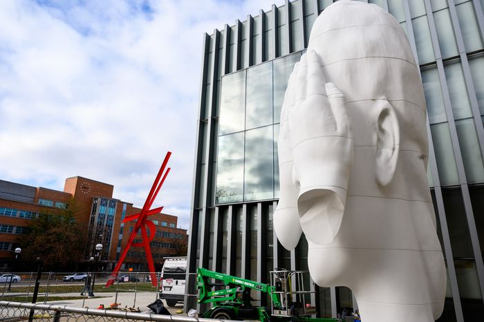
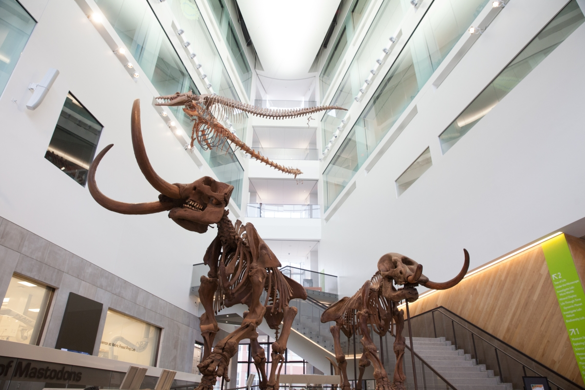
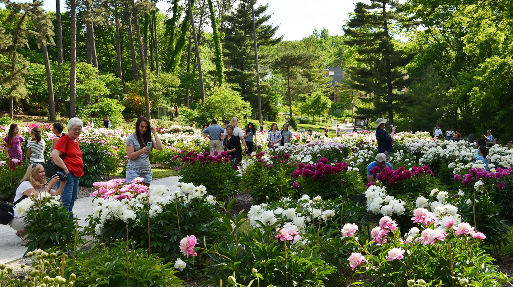

University of Michigan Museum of Art
The University of Michigan Museum of Art (UMMA) in Ann Arbor, Michigan with 94,000 sq ft is one of the largest university art museums in the United States.
Built as a war memorial in 1909 for the university's fallen alumni from the Civil War, Alumni Memorial Hall originally housed U-M's Alumni office along with
the university's growing art collection. One of the finest university art museums in the country, UMMA holds collections representing 150 years of art collecting
with over 20,000 works of art that span cultures, eras, and media.
Behind the Walls
The 25-foot sculpture of an elongated human head with hands covering both eyes was created by Spanish artist Jaume Plensa and signifies deep reflection, according to a museum news release.
Created using polyester resin and marble dust, the art will tower over passersby and visitors.

University of Michigan Museum of Natural History
A unit of the university's College of Literature, Science, and the Arts, the current building is located on the university's Central Campus and has 22,000 square feet of
exhibit space in a building that it shares with three research museums (Anthropology, Zoology, Paleontology). The University Herbarium is administered through the same
organization. The natural history collections began in 1837, and the current building, the Alexander Ruthven Museums Building, dates to 1928.
The public exhibit museum was founded in 1956, and today has more than 100,000 visitors annually.
On the Trail of the Mastodons
The only place in the world you can see a male and female mastodon skeleton side by side and a mastodon trackway! Step into a real mastodon footprint and touch a cast
replica of an eight-foot mastodon tusk. These footprints were cast from a trail left by a mastodon near Saline, Michigan. This is the only mastodon trackway ever found!

Matthaei Botanical Gardens & Nichols Arboretum
The University of Michigan Matthaei Botanical Gardens includes botanical gardens, natural areas with trails, and several research-quality habitats. Matthaei Botanical Gardens
offers activities and resources for all visitors, from families to gardening enthusiasts to hikers, birders, scientists, volunteers, and to University of Michigan faculty, staff,
and students. The gardens is dedicated to environmental stewardship and to enriching the understanding and enjoyment of the natural world through research, creative works,
public outreach, and educational programs and workshops for adults and children.
Peony Garden
Peak bloom in the Peony Garden typically runs from Memorial Day (late May) to the summer solstice (mid-June). The peak bloom can vary by 10 days from year to year, depending on the weather.
Warm weather makes the plants bloom early.
